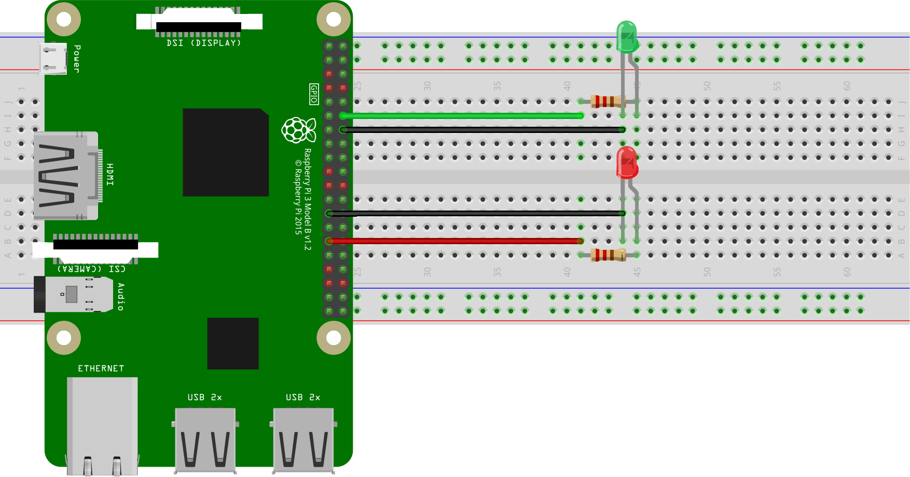
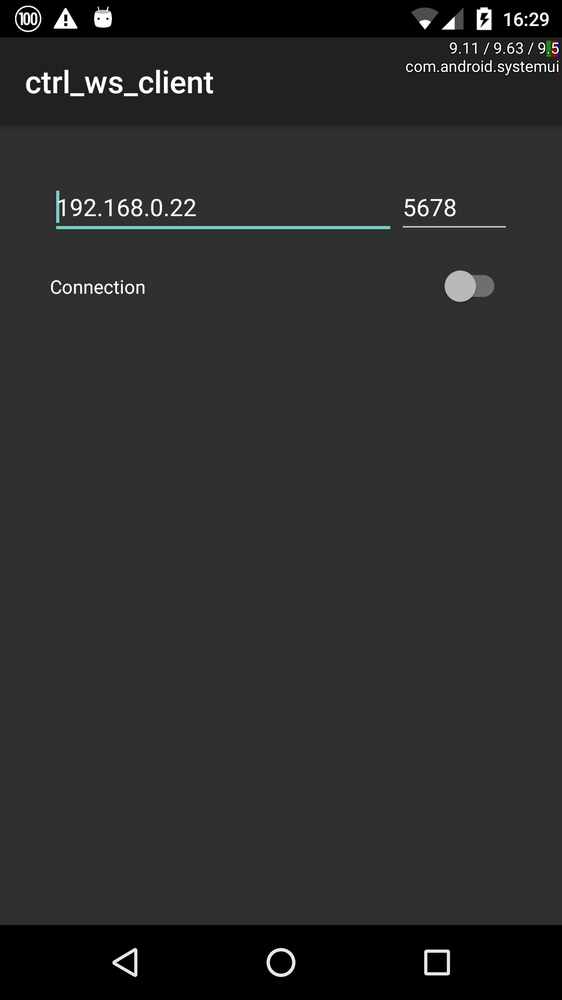

Introduction
In this post, we will get back to the topic of IoT to introduce two new technologies by example: WebSockets and Asynchronous I/O in Python. The project that will allow us to explore them is a simple system of two LEDs that we will control with the gravity sensor of an Android device via a Raspberry Pi over a network.
The post is divided into two parts. The first one is theoretical in nature and will cover the essential technical details of the two main subjects, that is WebSockets and Python's asyncio. In the second part we will have a look at the circuit that we are going to control over the network and discuss the server and client code.
But before we dive into the study of the topics of this post, it is perhaps best to first have a high level view of how all the pieces fit together, thus motivating the choices of technologies mentioned above. The idea of the project stems from the following scenario: suppose you want to build a device that can be controlled over the network, e.g. an hand-held device like a phone. As we have seen in a previous post, one way of achieving this is by using a single-board computer like a Raspberry Pi and control it via a web server.
Now, what if you wanted more control over the connection method to the device, and perhaps a bi-directional channel to let data from, e.g. sensors on the device, to flow upstream to the controlling device? An elegant way of achieving this goal these days is with WebSockets, which allow (full) duplex communication between pairs of connected devices. So, for instance, we could have a WebSocket server running on a Raspberry Pi, and have a native application on an Android device to run a WebSocket client. Control commands can then flow from the Android device to the single-board computer, while the server can feed data from any sensors that the device is equipped with back to the client, with just a single connection.
The code samples that we will look at towards the end of the post implement a Python WebSocket server that will run on, e.g., a Raspberry Pi, and a native Android application that will act as a WebSocket client to control a pair of LEDs mounted on a breadboard. The data that we will transfer from the Android device to our circuit is coming from a gravity sensor, so that when we twist the hand-held device clockwise or anti-clockwise, a different LED will turn on. Furthermore, the brightness will depend on how much the device is tilted.
So, read on to find out more!
Connecting Devices over a Network: WebSockets
In A Gentle Introduction to IoT, we saw how to control a single LED over a network by running a web server hosting the controlling web application. This was a simple web page that displayed a button that not only showed the current state of the LED, but allowed to control it by turning it on or off. All we needed to do was to point a web browser to the web server running on the Raspberry Pi and play around with the only web page on it.
There might be situations where we are not happy with a web server, but we actually want more control over the way devices connect with each other. In a simple client-server relationship, surely TCP/IP sockets spring to mind, but what if we want to allow for data to flow in both directions?
Contrary to ordinary sockets, WebSockets offer a full-duplex communication channel over a single TCP connection. They are compatible with the HTTP protocol, but make use of their own protocol (the WebSocket protocol), which is switched to by including an HTTP Upgrade header in the HTTP handshake. By default, they are supposed to operate on the standard HTTP ports (80 for HTTP and 443 for secured HTTP), but a different one can be used for custom use, as we will see in our example. The advantage over any other solutions is that WebSockets have been designed to allow for fast bi-directional communication between client and server via an TCP connection that is kept open until manually closed (or dropped for other reasons), but without the overheads of HTTP headers.
By design, WebSockets are then the perfect tool for exchanging short messages between devices. As to what kind of messages we can send back and forth, we will see that we can either send text messages, or raw binary data, by either operating the WebSocket with text or binary frames.
Having justified the use of WebSockets for our project, we now have to motivate
the use of the other mentioned technology: asyncio.
Like in A Gentle Introduction to IoT,
the choice of Python is motivated by the use of the Raspberry Pi. In Python,
WebSocket support is provided by the
websockets module, which is built
on top of asyncio.
Here is where we encounter the first constraint though, since asyncio was
introduced in Python 3.4. We then have to ensure that we are using a version of
Python greater than or at least equal to 3.4. But our coding can also vary based
on whether we are using Python 3.5 and later. That is because this version of
Python introduces the async and await syntax for natively defining
coroutines (PEP 492).
In the last part of this post we will have a look at Python code samples written
with the standard asyncio syntax, as well as the new one introduced by PEP
492. For now, we shall have a quick overview of the new features that are
brought to Python 3 by the asyncio module to better familiarise with it and
its usage.
Coroutines
I believe that the best way to understand asyncio is to first look at the
basic concepts involved and recall the notion of coroutine. In Python we have
the concept of Generators since version 2.2. Generators look and feel like
normal functions, but rather than returning a value, they yield one, and are
normally used in loops to provide iterators.
The typical scenario where you'd want to opt for a generator rather than a function is when you have to keep track of some state in between the different values returned. A simple example is a generator that generates the first \(n\) Fibonacci numbers:
def fibonacci(n):
if n == 0: return
yield 0
if n == 1: return
yield 1
if n == 2: return
a0, a1 = 0, 1
i = 2
while i < n:
a2 = a0 + a1
yield a2
a0, a1 = a1, a2
i += 1
If \(n=0\), the generator doesn't yield any number and we can then return. When
\(n=1\), the generator must yield the first Fibonacci number only, which is 0, and
so on. The difference between return and yield is that the former terminates
the iteration, while the latter allows it to continue. To better understand what
is going on here, observe that a call to fibonacci, like f = fibonacci(10)
doesn't return a Fibonacci number (you might at first expect this to return the
first Fibonacci number), but a generator object instead, that is, something
that we can use with a for loop, or any function that expects an iterable
object, like sum. The first two Fibonacci numbers can then be generated with
f = fibonacci(2)
print(f)
print(next(f))
print(next(f))
# Expected output
# <generator object fibonacci at 0x7f2e0940baf0>
# 0
# 1
but if we now try to print yet another Fibonacci number, we get a
StopIteration exception, which signals that the generator has returned and
that there are no more values to be generated:
print(next(f))
# Expected output
# Traceback (most recent call last):
# File "<stdin>", line 5, in <module>
# print(next(f))
#
# StopIteration
The following code snippet illustrates the use of a generator with a for loop
test_cases = [0, 1, 2, 3, 10, 20]
for t in test_cases:
print("Test case: n = {}".format(t))
for f in fibonacci(t): print(f)
I am omitting the expected output to avoid cluttering the page, but it should be quite clear what the above code is supposed to do. To produce a more compact result we can do something like
def sfibonacci(n):
for f in fibonacci(n): yield str(f)
for t in test_cases:
print("Test case: n = {}".format(t))
print(" ".join(sfibonacci(t)))
# Expected output:
#
# Test case: n = 0
#
# Test case: n = 1
# 0
# Test case: n = 2
# 0 1
# Test case: n = 3
# 0 1 1
# Test case: n = 10
# 0 1 1 2 3 5 8 13 21 34
# Test case: n = 20
# 0 1 1 2 3 5 8 13 21 34 55 89 144 233 377 610 987 1597 2584 4181
which also shows how to construct a generator out of another generator.
From the above example we deduce that the yield keyword is generating a value
while also "pausing" the execution of the function, until another value is
requested from it. In this case, the execution resumes from the instruction that
comes soon after the yield, with all the values of local variables (the
state) preserved.
Generators are also known as semicoroutine, and this leads us to talk about coroutines. This is a more general concept, because it encompasses those code elements that not only pass a value to the caller, but also receive and process a value passed to them by another code element (e.g. a generator, or another coroutine). This definition looks a bit circular, and this is due to the fact that, with coroutines, the relation is not of caller-callee, but symmetric. In more concrete terms, we are talking about functions that can retain a state in between invocations, and that can call to other functions, suspending and resuming execution from certain points of the code.
Starting with Python 2.5, coroutines have become an integral part of the
language. They can be easily constructed with yield, which has been turned
into an expression. The value yields evaluates to is passed to the coroutine
with a call to send on the generator, like so
def coroutine():
c = 0
while True:
text = yield
c += 1
print("#{} : {}".format(c, text))
coro = coroutine()
coro.next()
coro.send("Hello")
coro.send("World")
# Expected output
# #1 : Hello
# #2 : World
If you look to code like the above for the first time, you might be wondering
why I have included a call to next. Remember from our discussion on generators
that, contrary to normal functions, a call to coroutine returns a generator
object and not the first generated value. After creation, a coroutine needs to
be primed, that is it needs to be started so that it can execute its code
until the first occurrence of the yield expression. The coroutine then halts
and waits for values to be sent to it. In Python, there are two equivalent ways
of priming a coroutine: either call next, as we have done in the code above,
or send it a None with coro.send(None).
Since it is quite easy to forget to prime a coroutine, a good idea is to define a decorator, e.g.
@coroutinethat creates, primes and returns a coroutine.
If you want to know more about coroutines, I recommend that you have a look at David Beazley's A Curious Course on Coroutines and Concurrency. Here, I have just stated the essential details that we are going to need for our project. These should be enough to convince you that, with coroutines in Python we can implement single-threaded concurrency, which offer an ideal ground for asynchronous I/O operations, without the overhead of many context switches between different threads.
The asyncio module
If you have ever done any sort of I/O before, like reading from/writing to a
file, or creating a socket and waiting for a connection etc... you will surely
know that most of the I/O operations are blocking. For example, if you are
trying to read from a file descriptor by making a SYS_READ system call, your
code will hand control over to the OS until your request can be honoured. The
normal execution flow then resumes.
The problem with this wait is that, in most cases, you don't know when there will be enough data available from the file descriptor to read. Your application then halts while it might be doing something useful instead.
The typical workaround is to poll the file descriptor periodically, and only read from it when data is actually available. As you can easily imagine, the solutions come in different patterns, and every time you have to deal with this there is some boilerplate code that you would have to write. This amounts to writing your event loop to cycle through your tasks, which include I/O polling. Wouldn't it be nice if we were provided with such boilerplate code encapsulated in a module that we can use whenever we need to perform asynchronous I/O operations?
This must be what the people behind asyncio must have thought, and that's why
the essential element that this Python module offers is an event loop. This
is designed to register and schedule Tasks which, with just a few words, can
be described as objects decorating coroutines (hence, in practice, they are
coroutines). Some of these tasks might involve I/O operations, and some of these
operations might be blocking. By continuously polling for the I/O status of file
descriptors, sockets etc..., asyncio allows you to write single-threaded
concurrent code that performs I/O.
In this post, we are interested in working with WebSockets, as as an example of
what we have just seen we can play around with some WebSocket servers and
clients. In Python, we can make use of the websockets modules, which builds
its functionalities on top of asyncio. The Getting
Started page on PyPI shows how simple
it is to create a a WebSocket client, and an echo server to test it. The
following examples are based on them, but with just some slight modifications,
and a twist: the client sends a string read from STDIN and the echo server
reverses it.
So here is the server code
#!/usr/bin/env python3
# Echo server. Will reverse everything we throw at it.
import asyncio
import websockets
async def echo(websocket, path):
async for message in websocket:
await websocket.send(message[::-1])
loop = asyncio.get_event_loop()
loop.run_until_complete(websockets.serve(echo, 'localhost', 8765))
loop.run_forever()
and here is the client code
#!/usr/bin/env python3
# Client. Sends stuff from STDIN to the server.
import asyncio
import websockets
async def hello(uri):
async with websockets.connect(uri) as websocket:
await websocket.send("Hello world!")
async for message in websocket:
print(message)
await websocket.send(input())
asyncio.get_event_loop().run_until_complete(hello('ws://localhost:8765'))
And that's where we make our first encounter with the new async/await
keywords, introduced by the already cited PEP 492. The new syntax async def is
used to declare a native coroutine in Python 3.5 and later versions. Perhaps
more interesting are async with and async for. The former introduces native
asynchronous context managers for classes that define the new magic methods
__aenter__ and __aexit__, but apart from this, its usage is analogous to the
synchronous counterpart with. The new syntax async for is used to consume
asynchronous iterable, i.e. instances of classes that implement the __aiter__
magic method. When the await keyword is on its own, it defines an expression
that execute the coroutine it appears in to execute the one passed as its
argument until it completes. In the case of the code above, we just wait for the
websocket object to complete the task of sending the data.
After the above discussion, the code for the client application should be quite
clear. The first call to websocket.send is used to prime the socket, so that
async for message in websocket won't hang indefinitely, waiting for something
to show up on the socket's reading end.
Before we look at how to rewrite the above code snippets for Python 3.4, where
we do not have native coroutines, I would like to briefly comment on the last
two lines of code of the server application. The first time I came across that
code, they gave me a bit of thinking as to why we need to call
run_until_complete and run_forever. Wouldn't the former alone suffice? If
you recall our discussion about blocking I/O operations and the necessity of
constantly polling in order not to halt the execution of our application, you
realise that the call to run_until_complete will register the socket with the
I/O polling task. Hence, apart from this task, we have nothing else running, and
if we do not start the event loop, the newly created socket won't be checked and
the application simply terminates. The last line is there to ensure that we keep
monitoring the socket for new incoming connections. When a client connects, a
new task is scheduled to serve the connection with the passed handler, which
must be a coroutine. This can be verified by peeking at the source code of both
asyncio
and websockets.
And now to the Python 3.4 version of the above code snippets. There are a few
rule of thumb that we can use to convert from 3.5 and later to 3.4, where we
don't have await and async. The first is the use of the decorator
@asyncio.coroutine instead of async def. The situation is a bit more
complicated for async with, which requires a replacement for await, which is
yield from. The latter is substantially equivalent to
for a in foo(): yield a # Same as: yield from foo()
With this in mind, async with can be coded with a more traditional try ...
finally block as
# async with coro() as foo:
# # <code>
# pass
foo = yield from coro()
try:
# <code>
pass
finally:
# Whatever coro().__aexit__() would have done.
The async for loop would translate to something like the following
# async for foo in bar():
# # <code>
# pass
try:
while True:
foo = yield from bar().__anext__()
# <code>
except StopAsyncIteration:
return
This coding is not strict, since you could, or you might have to replace the
code of bar().__anext__() with the actual coding inside this coroutine. This
is the case for the code that we are about to see, in which we perform the above
translations. The server code for Python 3.4 is the following
#!/usr/bin/env python3
# Echo server. Will reverse everything we throw at it.
# For Python 3.4
import asyncio
import websockets
@asyncio.coroutine
def echo(websocket, path):
while True:
message = yield from websocket.recv()
yield from websocket.send(message[::-1])
asyncio.get_event_loop().run_until_complete(websockets.serve(echo, 'localhost', 8765))
asyncio.get_event_loop().run_forever()
while the client code now looks like this
#!/usr/bin/env python3
# Client. Sends stuff from STDIN to the server.
# For Python 3.4
import asyncio
import websockets
@asyncio.coroutine
def hello(uri):
websocket = yield from websockets.connect(uri)
try:
yield from websocket.send("Hello world!")
while True:
message = yield from websocket.recv()
print(message)
yield from websocket.send(input())
finally:
yield from websocket.close()
asyncio.get_event_loop().run_until_complete(hello('ws://localhost:8765'))
Note how to execute a native coroutine, or one decorated with
@asyncio.coroutine in Python 3.4, needs to be executed by an event loop from
the asyncio module.
Setting Things Up
We shall now present the circuit that makes up the device that we want to control over the network, and both the server and client code that will allow us to use the gravity sensor of an Android device to operate it.
The Circuitry
This part of the post will be brief, because we are going to recycle part of the previous post on IoT A Gentle Introduction to IoT. In fact, we are going to double it up by making a circuit with two LEDs, each one following the same design in the just mentioned post. The idea is to turn either one or the other on, depending on the rotation angle of our Android device. For example, if we tilt our device to the right, the green LED will become brighter, while when we tilt it to the left, the red LED will become brighter.
So, based on the knowledge acquired with the previous post on IoT, the circuit that we want to build will look like this.

For this project I am using a Raspberry Pi 3 Model B. As you can see from the picture above, we need two LEDs, preferably of different colours, e.g. green and red, and two 220 Ω resistors. The green LED will be controlled via the BCM 18 (8) pin (green jumper wire), while the red one is controlled via the BCM 5 (29) pin (red jumper wire) of the Raspberry Pi. The black jumper wires indicate a connection on a ground pin.
The Server Code
The server code will run on the Raspberry Pi and will open a WebSocket server, listening for connection requests. At the moment of writing, Raspbian Jesse has Python 3.4.2 in its repository, so that we cannot benefit of the native Python coroutine offered by Python 3.5, unless we install this version manually.
All the server code can be found inside the gravity_led/server folder of the iot repository. Due to its length I will refrain from embedding it on this post, but I will comment on the essential aspects.
The code is based on an abstract WebSocket Server class, WSServer, contained
in
lib/wss.py.
An actual WebSocket server has to inherit from this class and implement the
handler method, which is the one that bootstraps the logic of the server
application. This will be called as soon as the WebSocket server starts serving
connection requests.
On creation, we can specify the address and port the server is to listen on, as
well as a possible limit on the number of simultaneous connections that the
server is allowed to serve. Why would such a limit be ever necessary? The reason
is that, in this particular example, we only have one device, and this can only
be controlled by one client at a time. It makes no sense to accept more than one
connection. By setting the limit to 1, we then prevent other clients from
connecting and finding out that the device is already being controlled by
another client. For the way it is implemented though, the class is flexible
enough to allow changing this limit at run-time with a call to the
set_server_limit.
After instantiation, we can run the server with a call to the start method,
and we can check whether it is running at any time with is_running. Most of
the code in the former method provides logging information and a graceful
shutdown when the user presses Ctrl+C to halt the server.
The code contained in
main.py
is used to bootstrap the class GyroListener contained in
gyro_listener.py,
which holds the actual logic of the server. As you can see, all that we have to
do is inherit from WSServer and implement the handler coroutine, as shown
here.
@asyncio.coroutine
def handler(self, websocket, path, conn_id):
self.logger.info("Connection ID {} established [path {}]".format(conn_id, path))
G.setmode(G.BOARD)
G.setup(CHR, G.OUT)
G.setup(CHL, G.OUT)
pr = G.PWM(CHR, FREQ)
pl = G.PWM(CHL, FREQ)
pr.start(0)
pl.start(0)
while self.is_running:
try:
gyro_data = yield from websocket.recv()
g = gyro_data.split()
val = int(float(g[1]))
self.logger.debug("Received datum {}".format(val))
if val > 0:
pr.ChangeDutyCycle(val)
pl.ChangeDutyCycle(0)
else:
pr.ChangeDutyCycle(0)
pl.ChangeDutyCycle(-val)
except websockets.exceptions.ConnectionClosed:
self.logger.info("Connection ID {} closed.".format(conn_id))
pr.stop()
break
G.cleanup()
Here we initialise the Pi's GPIO and start listening to data over the socket
until the server is running or the connection is closed by the client. The two
pins that we have chosen to use to control the LEDs (CHR and CHL) are set on
the PWM (Pulse Width Modulation) mode so that we can control the brightness: the
more the Android device is tilted in one direction, the brighter the LED for
that direction.
Here we also notice the "contract" between the server and the client: the
latter will send the three coordinates of the gravity sensor as a
space-separated list of three floating point values. The server will split this
string and use the second component (the y-axis of the gravity sensor) to
control the LEDs. When the value is positive the LED on the CHR pin will turn
on, with a duty cycle proportional to the value passed by the client; when the
value is negative the LED on the CHL pin will start to turn on.
To launch the server, run main.py and pass the IPv4 address and a port number,
for example
python3 main.py 0.0.0.0 5678
to listen on any IP address on the Raspberry Pi and accept connections from everywhere.
The Client Code
For the client, we are going to develop a minimalist Android application, with
the same project structure that we have encountered in the previous post on
Android Development from the Command
Line. Again, the code is quite extensive,
but you can find it in the
gravity_iot/client
folder. Apart from the minimal Android project setup, with the
AndroidManifest.xml and the resource files for the UI, all that we need is a
single activity where we can specify the IP address and the port of the server
to connect to, and a toggle button to start and close a connection to the
server.
For dealing with WebSockets in Java, we make use of the Java
WebSockets
library, which offers the WebSocketClient abstract class. As you can see from
the code in
MainActivity.java,
all that we have to do is extend the WebSocketClient class and implement a few
methods, which we just use for logging purposes. The actual signalling is done
via callbacks triggered by the on-board gravity sensor on the Android device:
@Override
public void onSensorChanged(final SensorEvent event) {
float x = event.values[0];
float y = event.values[1];
float z = event.values[2];
float g = (float) sqrt(x*x + y*y + z*z);
try {
webSocketClient.send(Float.toString(x/g*100) + " " + Float.toString(y/g*100) + " " + Float.toString(z/g*100));
} catch (WebsocketNotConnectedException e) {
Log.w("ctrl_ws_client", "Sensor updated but socket not connected");
}
}
This method is part of the MainActivity class since we decided that this
should implement the SensorEventListener interface. When a connection is
successfully started, we register the instance of this class with the sensor, so
that when the value is changed a white-space separated list of the three
components of the gravity vector are sent in text form to the server via the
WebSocket.
We can use Gradle to build and deploy the application for testing on a device with the command
./gradlew installDebug
assuming that you have an Android device in developer mode connected to your building machine via USB. This is what it looks like on my Nexus 5

Before moving to the conclusion, just a quick note on the contents of the
AndroidManifest.xml file. If you have had a look at it, you might have noticed
the attribute android:configChanges="orientation|screenSize" on the activity
element. This allows the application to rotate with the device orientation,
without the application being restarted. If we do not put this attribute, any
previous connection would be closed and we would have to restart it by pressing
on the toggle button. The use of this attribute is not mandatory, but bear in
mind that if you decide not to use it, then you would have to make sure that the
same WebSocket connection is persisted across every screen rotation.
Conclusions
In the introduction, I have mentioned that WebSockets can be operated in two
modes: text and binary. In the code that we have seen in this post we have
sent text frames between the server and the client. This is because we have
used data of type String in the Java client code, which is then received as
str on the Python server end.
In most practical cases, it is more convenient to send a stream of bytes
instead, thus increasing throughput. On the Java side, this is achieved by
passing an array of bytes (bytes[]) to the send method. On the Python end,
data will then be received as bytes (that is, the return value of the recv
coroutine is of type bytes) that one can iterate over, or perform any
necessary operation to make sense of the received information.
The same holds on reverse: if we send an array of bytes from Python, we will
receive an binary frame on Java. In this case, though, we will have to implement
the ByteBuffer version of the onMessage callback of the WebSocketClient
class, i.e. the one with signature
public void onMessage( ByteBuffer bytes )